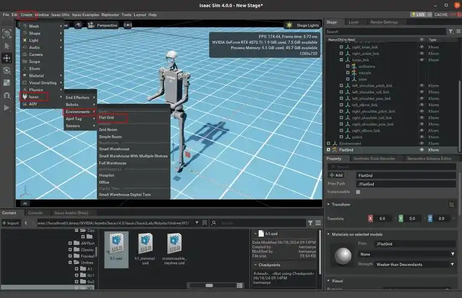
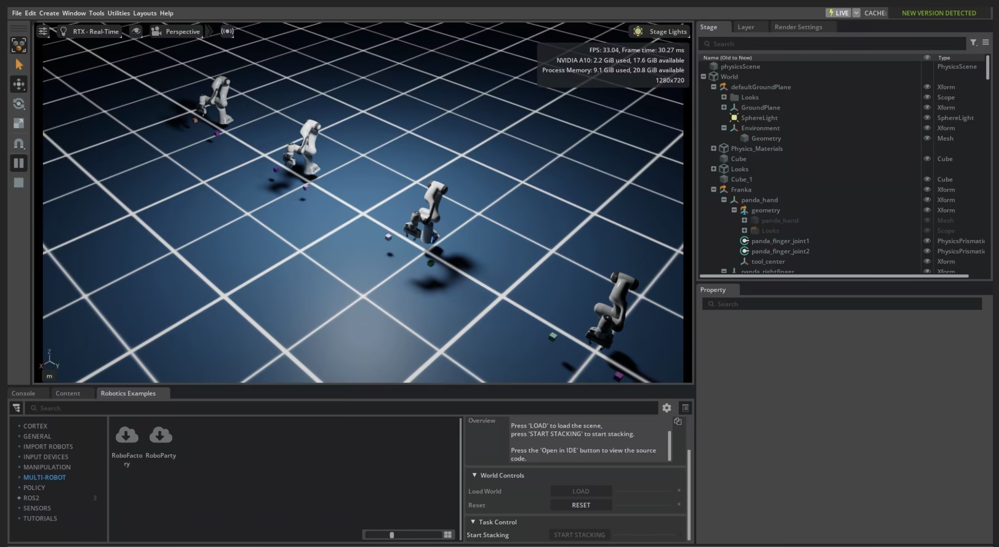
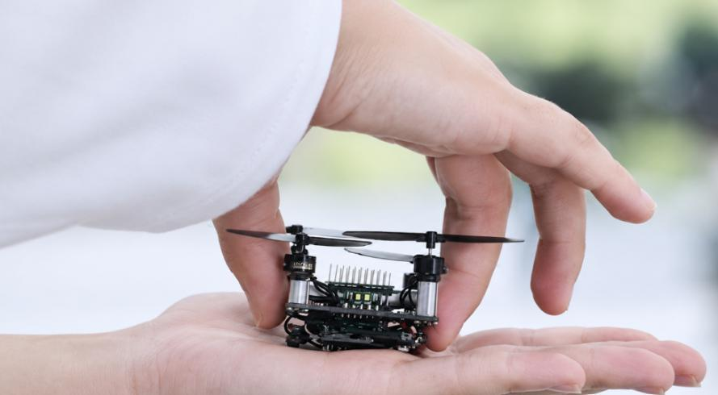
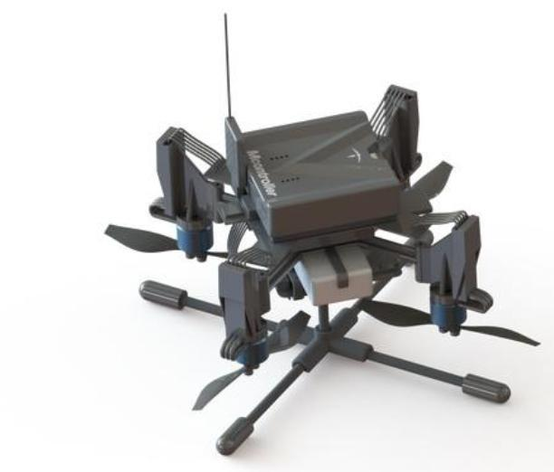
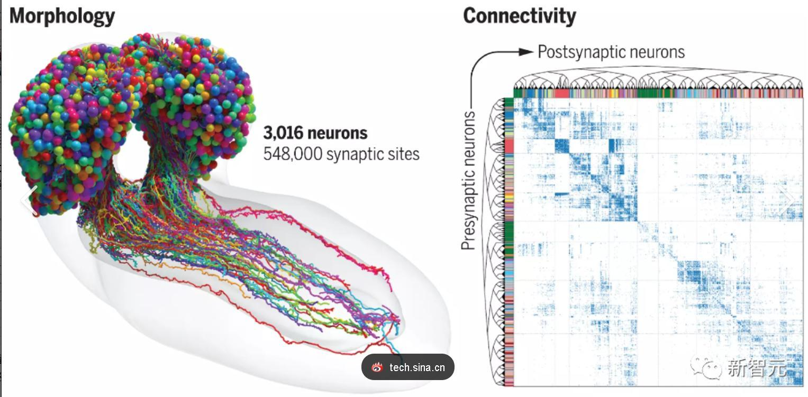

RESEARCH ROADMAP
围绕教育科研与工程验证的需求，团队计划开展以下四项科研项目。
SIMULATION
基于 Blender 物理引擎的高性能仿真计算软件
围绕空中机器人研发中的仿真验证需求，计划开展基于 Blender 物理引擎的高性能仿真计算软件研发。面向算法调试与系统验证，探索仿真环境、机器人模型与控制流程的协同，为后续实机实验提供可重复的验证条件。
- Blender
- 仿真计算
- 算法验证


FLIGHT CONTROL
多旋翼空中机器人 SE(3) 流形控制器
面向多旋翼空中机器人的控制需求，计划研究 SE(3) 流形上的控制方法及其工程化实现。围绕姿态与位置控制、控制接口及实际飞行验证等环节开展研发，探索便于部署与扩展的商业化控制方案。
- SE(3)
- 多旋翼平台
- 飞行控制

MICRO AERIAL ROBOTICS
超微型智能空中机器人开发
面向可运行学习类算法的超微型空中机器人，计划开展机载平台与软硬件协同设计。围绕紧凑机体中的计算资源、感知与控制协同等问题，探索学习算法在小型飞行平台上的部署与验证，为单机和集群自主飞行研究提供实验载体。
- 超微型平台
- 学习算法
- 机载计算


BRAIN-INSPIRED FLIGHT
类脑自主飞行技术
围绕类脑自主飞行技术开展前沿探索，关注感知、决策与飞行控制之间的协同。结合空中机器人自主运行需求，研究面向环境变化的智能行为机制，并通过仿真与实验逐步验证相关方法。
- 类脑智能
- 自主飞行
- 感知决策
